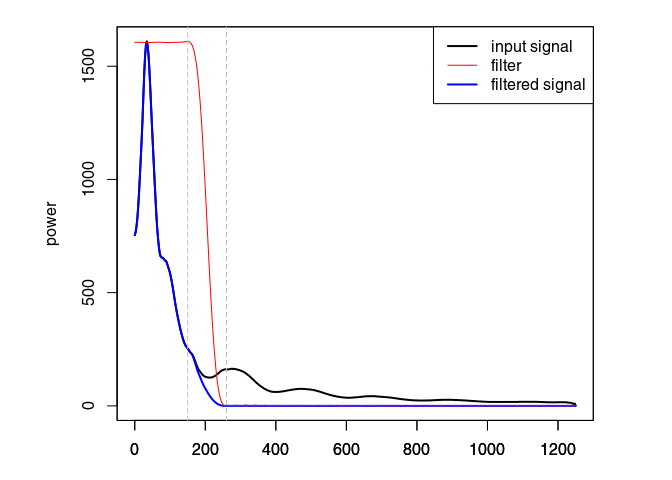
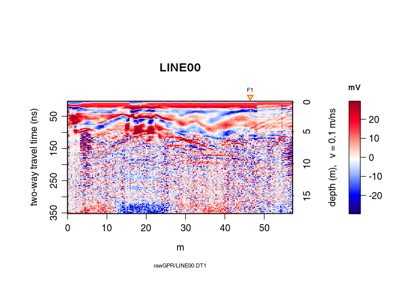
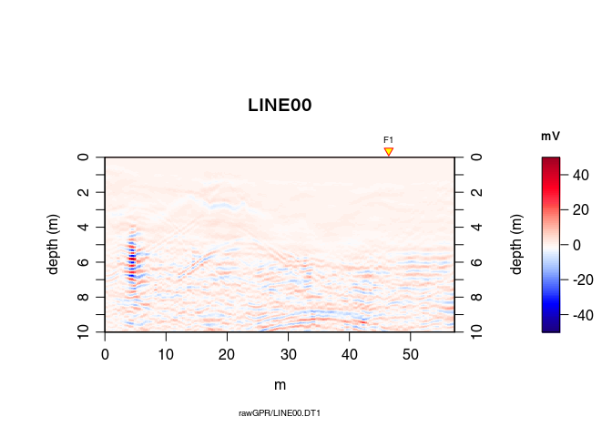
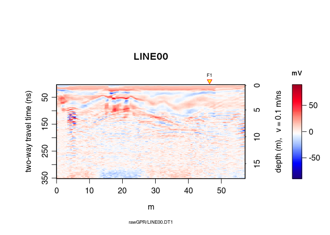
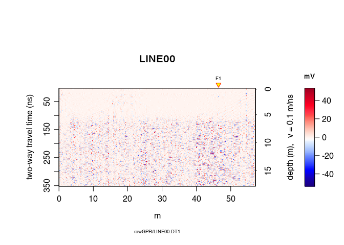

RGPR is a package for R to read, write, analyse and visualise ground-penetrating radar (GPR) data.
R is a [free] programming language and software environment for statistical computing and graphics supported by the R Foundation for Statistical Computing (Wikipedia > R).
Note: This R-package is still in development, and therefore some of the functions may change in a near future. The R-package RGPR is hosted on GitHub at https://github.com/emanuelhuber/RGPR. You can contribute to the development of RGPR: create an account on GitHub, fork RGPR, improve it and sumbmit your modifications.
If you have any questions, comments or wishes, etc. feel free to contact me (in english, french or german)
emanuel.huber@alumni.ethz.ch
Learn how to migrate GPR data.
Note that his tutorial will not explain you the math/algorithms behind the different processing methods.
In this tutorial the code snippets are in monospaced typewriter font like in the following example:
1 + exp(1:10)The R output are preceded by a double hash (##). The following R output is from the code snippet above.
## [1] 3.718282 8.389056 21.085537 55.598150 149.413159
## [6] 404.428793 1097.633158 2981.957987 8104.083928 22027.465795Create a text file and save it with the .R extension (the extension for the R-script files). Then copy the code snippets into your R-script file and adapt them to your needs. To run the code in R, copy the code and paste it into the R console. You can also manually enter the code.
Don’t hesitate to consult the help files and to search for help on the internet. For example, to see the help for the function mean(), enter:
?mean # open the help file related to the function mean()I recommand you to first think about the organisation of your files and directories. I suggest to organise them as follows:
/2014_04_25_frenke (project directory with date and location)
/processing (here you will save the processed GPR files)
/rawGPR (the raw GPR data, never modify them!)
RGPR_tutorial.R (this is you R script for this tutorial)Load the packages RGPR and rChoiceDialogs (rChoiceDialogs provides a collection of portable choice dialog widgets):
library(devtools)
devtools::install_github("emanuelhuber/RGPR")
library(RGPR) # load RGPR in the current R session
library(rChoiceDialogs)
myDir <- "/media/huber/Elements/UNIBAS/software/codeR/package_RGPR/RGPR-gh-pages/2014_04_25_frenke"
setwd(myDir) # set the working directory
getwd() # Return the current working directory (just to check)## [1] "/media/huber/Elements/UNIBAS/software/codeR/package_RGPR/RGPR-gh-pages/2014_04_25_frenke"A <- readGPR(fPath = "rawGPR/LINE00.DT1") # the filepath is case sensitive!We assume that for each GPR record there is a file containing the (x, y, z) coordinates of every traces. The header of these files is “E”, “N”, “Z” instead of “x”, “y”, “z” because in topography “x” sometimes designates the North (“N”) and not the East (“E”) as we would expect. The designation “E”, “N”, “Z” is less prone to confusion and therefore we chose it!
TOPO <- file.path(getwd(), "coord/topo/LINE00.txt")readTopo() that creates a list whose elements correspond to the GPR record and contain all the trace coordinates:TOPOList <- readTopo(TOPO, sep = "\t")coord(A) <- TOPOList[[1]]Remove the DC-offset estimated on the first n samples usind the function dcshift(). This function takes as argument the GPR object and the sample index used to estimate the DC shift (in this case, the first \(110\) samples):
A1 <- dcshift(A, 1:110) # new object A1 The first wave break is estimated for each traces
tfb <- firstBreak(A1) # take some timeConvert the first wave break time into time-zero with firstBreakToTime0(). Here we define [time-zero] = [first wave break] - [air wave travel time between transmitter and receiver].
t0 <- firstBreakToTime0(tfb, A1)
time0(A1) <- t0 # set time0 to A1To shift the traces to time-zero, use the function time0Cor.
A2 <- time0Cor(A1, method = "spline")Remove the low-frequency components (the so-called “wow”) of the GPR record with:
A3 <- dewow(A2, type = "MAD", w = 50) # dewowing: take some timeEliminate the high-frequency (noise) component of the GPR record with a bandpass filter. We define as corner frequencies at \(150\,MHz\) and \(260\,MHz\), and set plotSpec = TRUE to plot the spectrum with the signal, the filtered signal and the filter.
A4 <- fFilter(A3, f = c(150, 260), type = "low", plotSpec = TRUE)
Apply a power gain and a spherical gain to compensate for geometric wave spreading and attenuation (Kruse and Jol, 2003; Grimm et al., 2006).
A5 <- gain(A4, type = "power", alpha = 1, te = 150, tcst = 20)
A6 <- gain(A5, type = "exp", alpha = 0.11, t0 = 0, te = 125)See Dujardin & Bano (2013, Topographic migration of GPR data: Examples from Chad and Mongolia, Comptes Rendus Géoscience, 345(2):73-80. Doi : 10.1016/j.crte.2013.01.003)
Time correction for each trace to compensate the offset between transmitter and receiver antennae (it converts the trace time of the data acquired with a bistatic antenna system into trace time data virtually acquiered with a monostatic system)
A7 <- timeCorOffset(A6)
plot(A7)
A8 <- upsample(A7, n = c(3,1))Vertical resolution of the migrated data: dz = 0.01m.
Dominant frequency from spec(A9): fdo = 80 MHz (used to estimate the Fresnel zone).
For the moment the algorithm works only with a constant radar wave velocity. In this example the velocity is:
vel(A8) # velocity## [1] 0.1depthunit(A8) # units: nano-second (ns)## [1] "ns"To change the velocity, simply do:
vel(A8) <- 0.09 # velocity in nsA9 <- migration(A8, type="kirchhoff", max_depth = 10,
dz = 0.01, fdo = 80)
plot(A9)
You don’t see so much: we need some post-processing!
Trace smoothing with a Gaussian filter
A10 <- filter1D(A9, type="Gaussian", sigma=2.5) Automatic gain control
A11 <- gain(A10, type="agc", w=0.55) inverse normal transformations
A12 <- traceScaling(A11, type = "invNormal")Before migration
plot(traceScaling(A8, type = "invNormal"))
After migration
plot(A12)
Notes